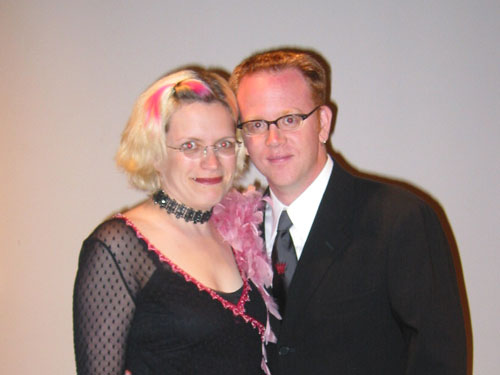

|
While we anxiously awaited the big event, we were entertained by our friends' interpretation of the Creative Formal dress. Everyone looked so fantastic, including Janice (very girly in her pink and lace) and Jason (sporting the tie from his own wedding). |